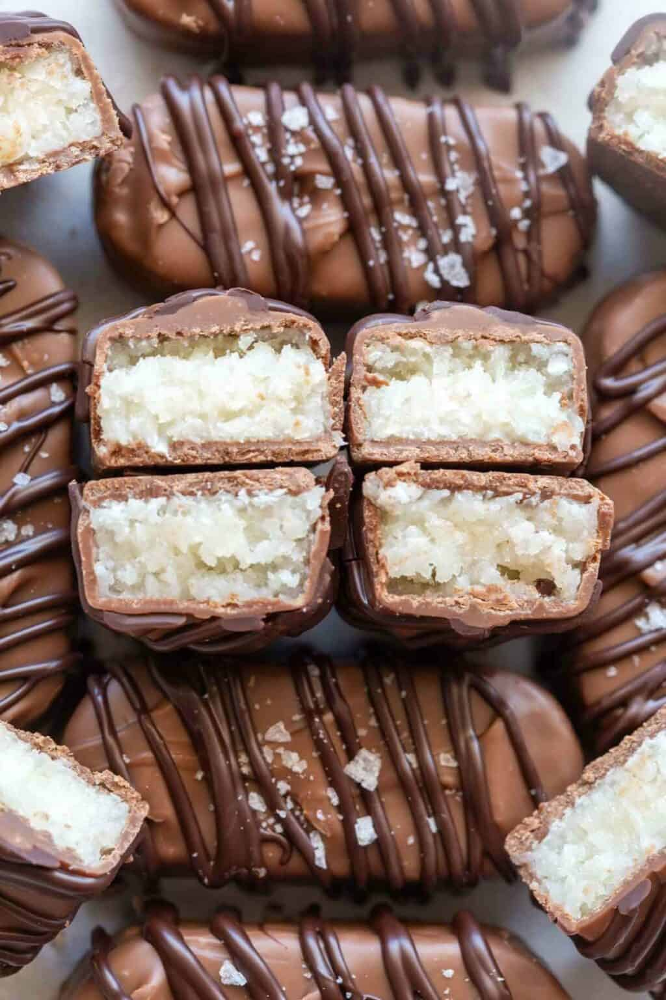

Bounty chocolate dupe

Description
Bounty chocolate bars have to be on my top 3 favourite chocolate of all time!
The perfect combination of coconut and a dark chocolate topping (which cuts the sweetness from the condensed milk).
By now after clicking through my list of recipes by now you should know I am a sucker for a quick sweet fix,
using the least Ingredients and taking the quickest ammount of time to satisfy that sweet craving as quick as possible!
Ingredients
- 3 cups shredded coconut
- ⅔ cup sweetened condensed milk
- ½ cup powdered sugar
- 1 ½ ounce dark chocolate chips or chunks
Steps
- In a large bowl combine the coconut with the
condensed milk and powdered sugar
- Form the mixture into rounded rectangles, using a spoon, they should be about 5cm in length.
Wet your hands for easier handling. Refrigerate for 1 hour
- Melt the dark chocolate as per package instructions.
The chocolate should be smooth and glossy.
-
Dip each candy into chocolate until completely covered. Place on wire rack or parchment paper to harden.
Refrigerate about 30 minutes before serving.